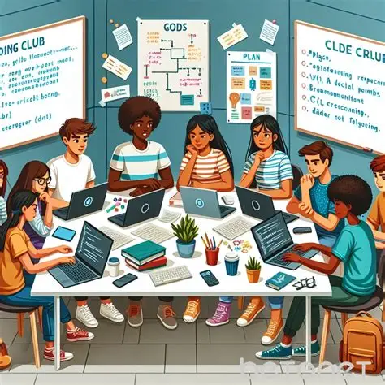
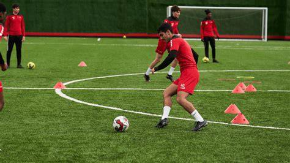
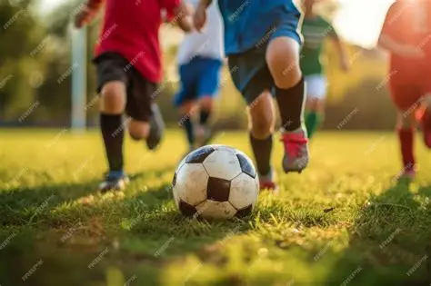
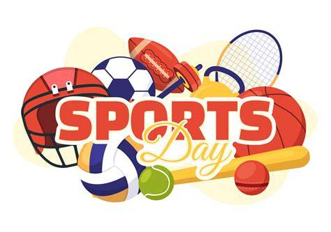

The goal of the Sports Club is to encourage students to stay active and develop important skills such as teamwork, discipline, leadership, and sportsmanship. The club also provides students with opportunities to enjoy sports with their classmates.
Members participate in football training, friendly matches, sports competitions, fitness activities, and school sporting events. Students can practice their skills while working together as a team.
Mr. Marcus Johnson — Organizes sports activities and encourages students to develop teamwork, discipline, fitness, and good sportsmanship.
Students should be willing to participate in physical activities and follow the rules of the club. Members are expected to attend practices, participate in games and activities, and show good teamwork and sportsmanship.

Members take part in training sessions designed to improve their football skills. Students practice passing, shooting, ball control, teamwork, and communication while learning how to work effectively with their teammates.

Students participate in friendly football matches against other students and teams. These games give members an opportunity to practice their skills while developing teamwork, confidence, communication, and good sportsmanship.

Members participate in different activities and competitions during the school's annual Sports Day. Students have the opportunity to represent their teams, challenge themselves, and support their classmates while enjoying a fun day of sports.